본격적인 Lab 시작에 앞서 구성에 필요한 IAM User, EC2, S3를 생성 및 구성합니다.
Lab 전체에서 사용할 IAM User를 생성합니다.
AWS Management Console에 로그인 한 뒤 IAM 서비스에 접속합니다.
왼쪽 메뉴에서 Users를 선택합니다. 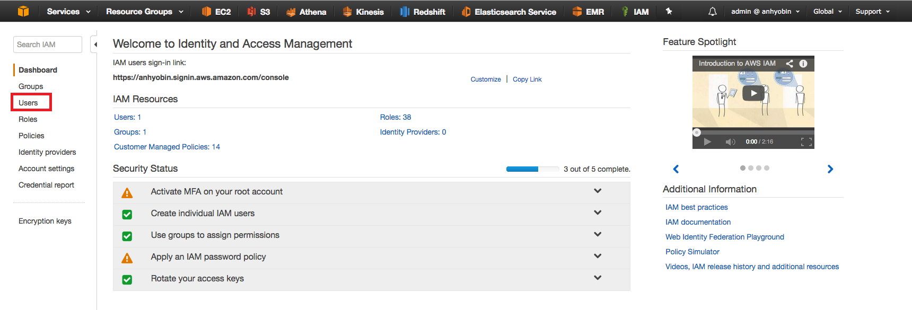
Add user 버튼을 클릭하여 사용자 추가 페이지로 들어갑니다.
User name에 <원하는 사용자 이름> 을 입력하고, Access type에 Programmatic access와 AWS Management Console access 둘 모두를 선택합니다. Console password에 <원하는 패스워드>를 입력하고, 마지막 Require password reset의 체크는 해제합니다. 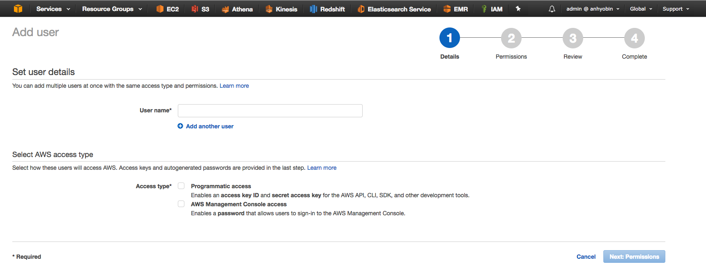 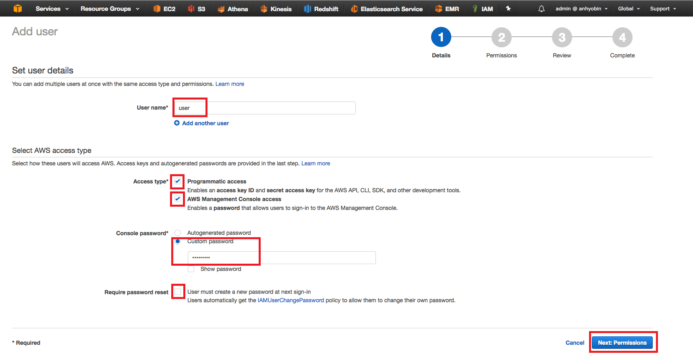
Next: Permissions 버튼을 클릭하고 Attach existing policies directly를 선택한 뒤 AdministratorAccess 권한을 추가해줍니다. 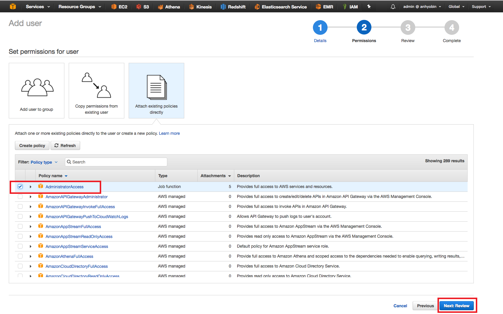
Next: Review 버튼을 클릭하고 정보를 확인한 뒤 Create user 버튼을 클릭하여 사용자 생성을 완료합니다. 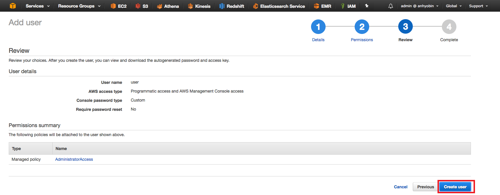
Download.csv 버튼을 클릭하여 생성한 사용자의 정보를 다운 받습니다. EC2 설정에 꼭 필요한 파일이므로 기억하기 쉬운 위치에 저장합니다. 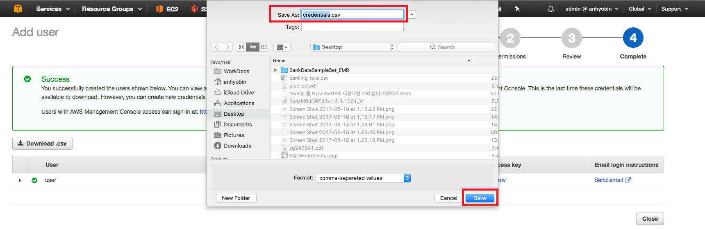
AWS Management Console에 로그인 한 뒤 IAM 서비스에 접속합니다.
왼쪽 메뉴에서 Roles를 선택합니다. 상단의 Create role 버튼 클릭하여 role 생성 page로 들어갑니다. 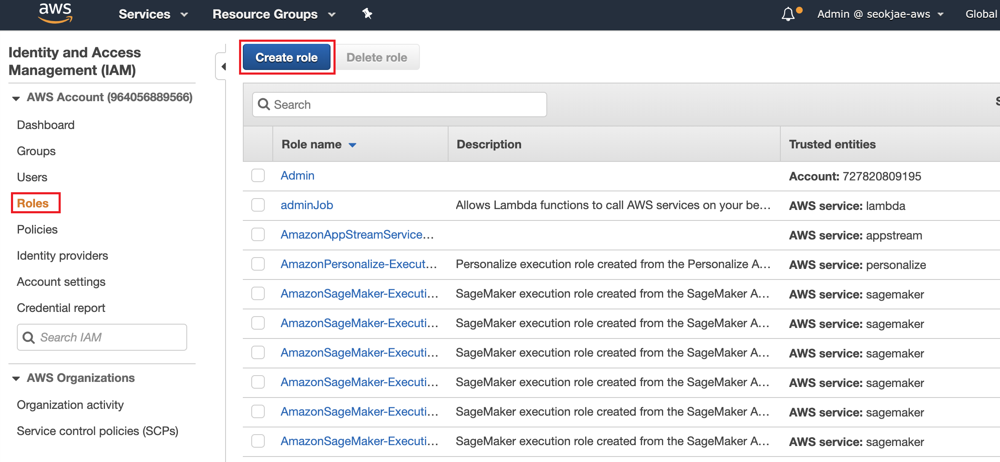
AWS service 선택, EC2 service 를 선택 합니다. Next: Permissions를 선택합니다. 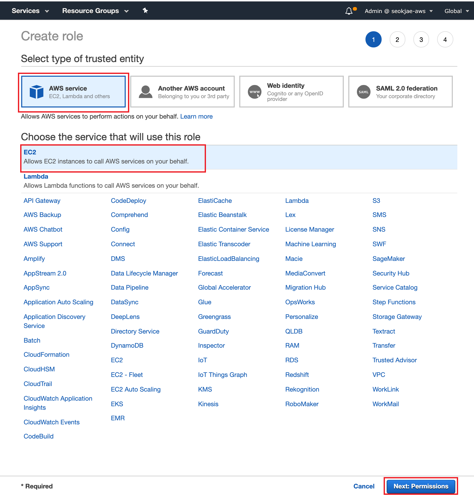
Filter에 “SSM” 을 입력하고, AmazonEC2RoleforSSM를 선택합니다. Next:Tags 버튼을 클릭해서 tags 입력 부분으로 들어가서, Next:Review 버튼을 클릭합니다. 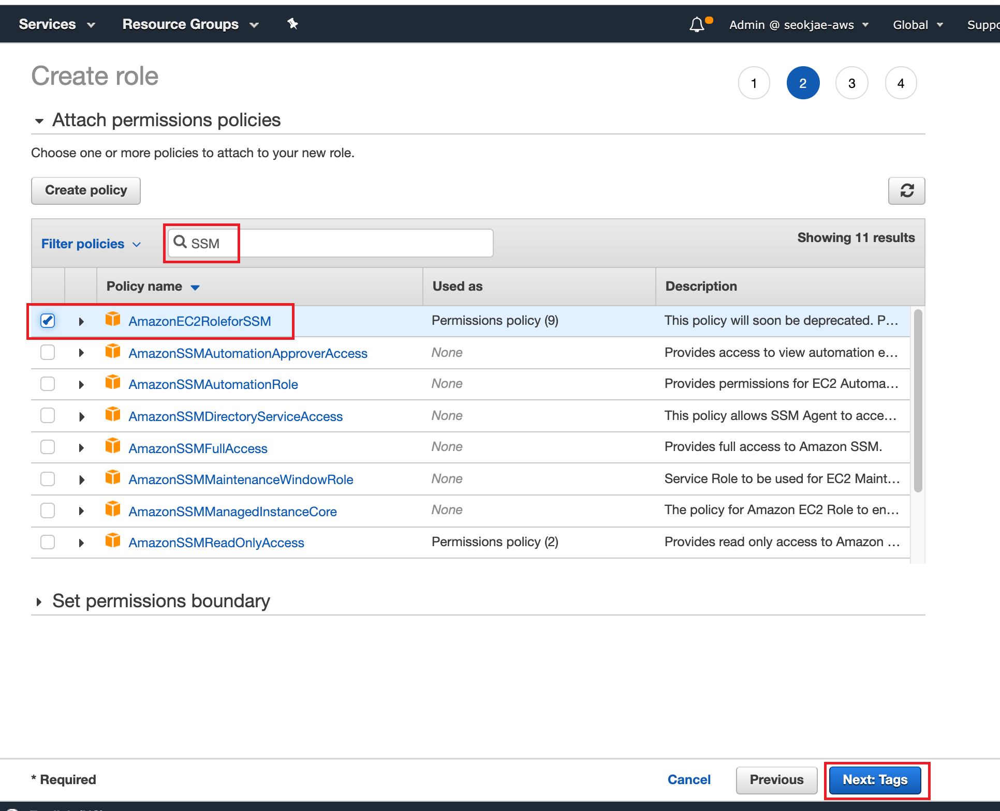
Role name에는 EC2RoleforSSM을 입력하고, Create role 버튼을 클릭합니다. 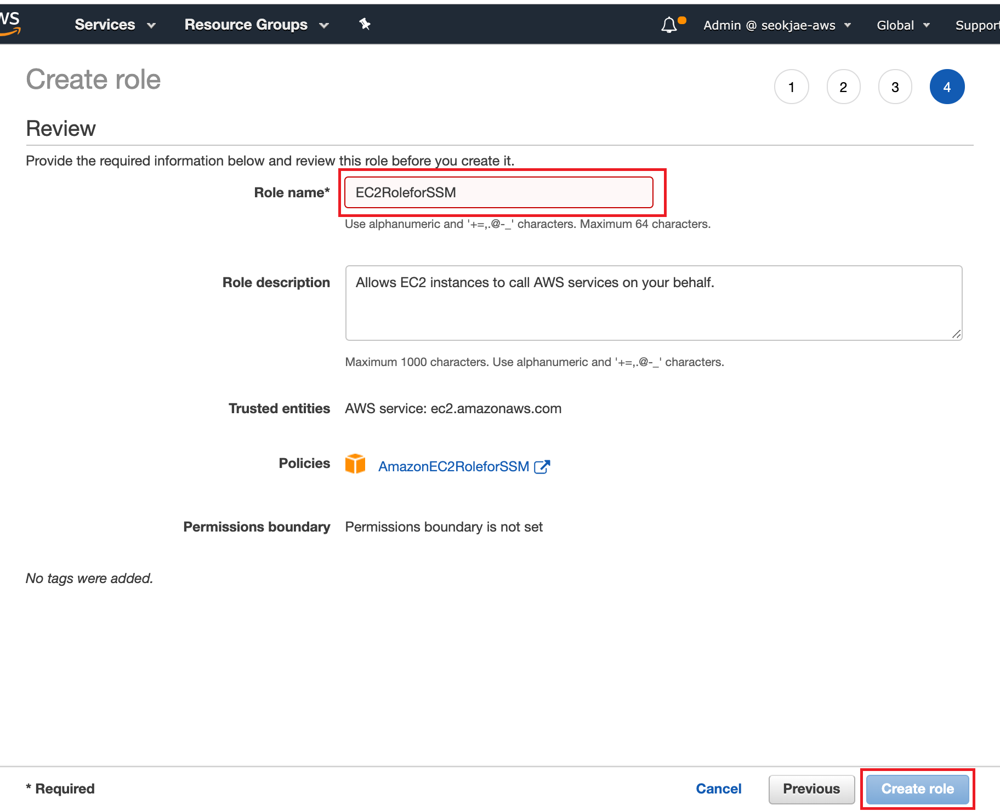
Lab에서 데이터를 실시간으로 발생시킬 EC2 인스턴스를 생성합니다.
#include
https://s3.amazonaws.com/immersionday-bigdata-v20180731/userdata.sh
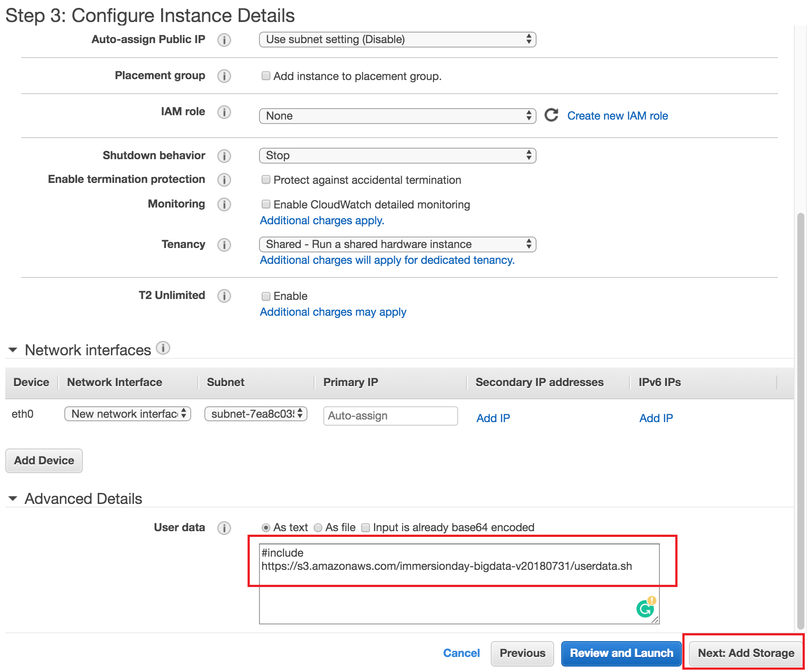 8. Step 4: Add Storage 화면에서 기본값을 그대로 두고 Next: Add Tags를 클릭합니다. 9. Step 5: Add Tags 화면에서 Add Tag 버튼을 한 번 클릭한 뒤, Key/Value : Name/AnalyticsStream 를 입력하고 Next: Configure Security Group 을 클릭합니다. 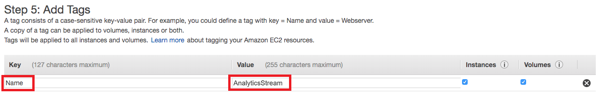 10. Step 6: Configure Security Group 화면에서 Security Group에 필요한 정보를 입력한 후 Review and Launch를 클릭합니다. * Security Group Name : bastion * Description : SG for bastion * Type : SSH * Protocol : TCP * Port Range : 22 * Source : 0.0.0.0/0 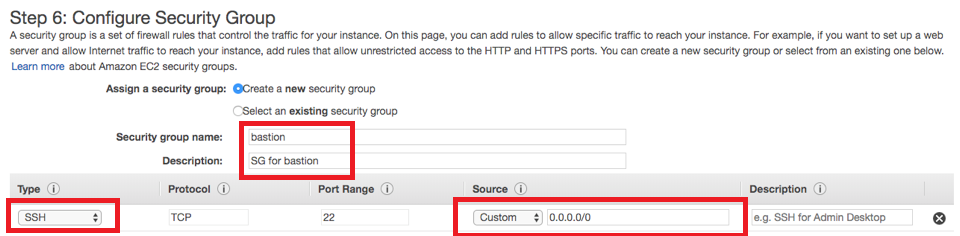 11. Step 7: Review Instance Launch 화면에서 Launch를 클릭합니다. 12. EC2 Instance에 접속하기 위한 Key pair를 생성합니다. Create a new key pair를 선택하고 Key pair name은 analytics-hol 을 입력한 후 Download Key Pair를 클릭합니다. 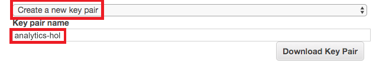 13. Key Pair를 PC의 임의 위치에 저장한 후 Launch Instances를 클릭합니다. (인스턴스 기동에 몇 분이 소요될 수 있습니다.) 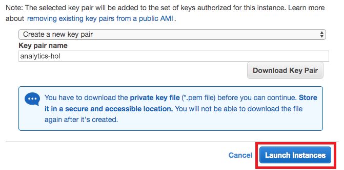 14. (MacOS 사용자) 다운로드 받은 Key Pair 파일의 File Permission을 400으로 변경합니다.
$ chmod 400 ./analytics-hol.pem
$ ls -lat analytics-hol.pem
-r-------- 1 ****** ****** 1692 Jun 25 11:49 analytics-hol.pem
생성한 EC2 인스턴스가 다른 AWS 리소스에 접근 및 제어할 수 있도록 다음과 같이 구성합니다.
sudo cp /home/ec2-user/redshift.py /home/ssm-user/
sudo cp /home/ec2-user/firehose.py /home/ssm-user/
sudo cp /home/ec2-user/banking_loss.csv /home/ssm-user/
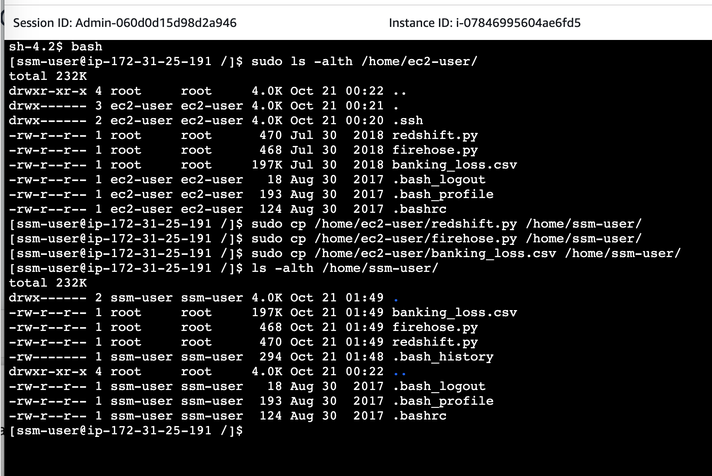
ls /home/ssm-user/
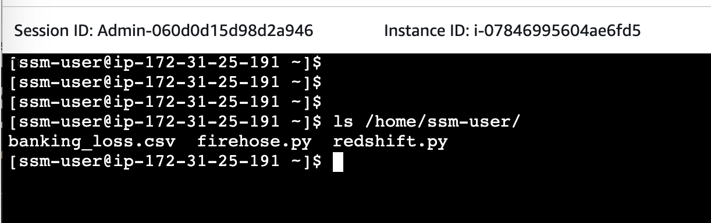
aws configure
AWS Access Key ID [None]: <Access key ID>
AWS Secret Access Key [None]: <Secret access key>
Default region name [None]: us-west-2
Default output format [None]:
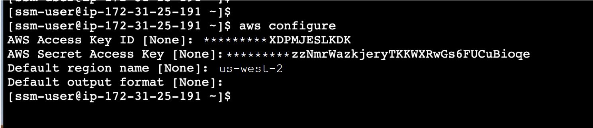
aws configure list
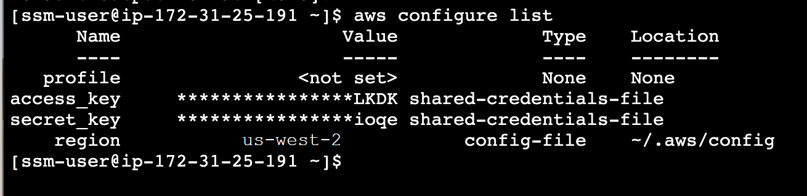
발생한 실시간 데이터를 저장할 S3 Bucket을 생성합니다.
| Bucket name | analytics-workshop-[개인식별자] (예 : analytics-workshop-foobar) |
| Region | 미국 서부 (오레곤) |
| 그 외 | default |